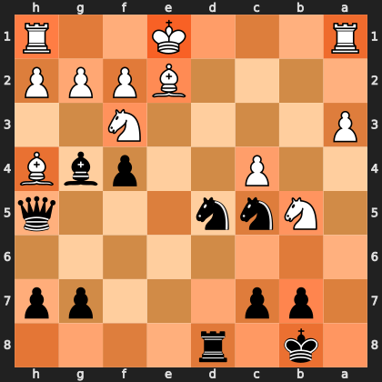
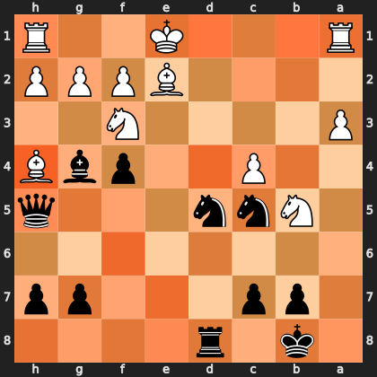

August 15, 2026
The Mirror in the Machine: Debugging Attention Extraction from a Chess Transformer
A coordinate-frame error silently reflected half of every attention map I pulled out of a 15-layer neural network. Nothing crashed, no test failed, and the output looked exactly like insight.
When you read activations out of a neural network, you are translating between two coordinate systems: the one the network thinks in, and the one you think in. If those two disagree and nothing crashes, you get a plausible picture of nothing.
This post is a short account of exactly that bug -- how it hid, what it cost, and how it was eventually caught. The subject is BT3, a Leela Chess Zero network: a 15-layer transformer with 24 attention heads per layer. It treats each of the 64 board squares as a token, so every head produces a 64×64 attention matrix.
I have spent most of my career on ocean models and clinical data pipelines, not neural networks. But this turned out to be a bug I recognised immediately once I saw it, because it is the same failure mode as a sign convention flipped in a biogeochemical model. That is really why I am writing it up.
Reading attention out of BT3
The network ships as ONNX. Converted into a PyTorch module tree, its encoder blocks appear as named submodules -- module.encoder{i}/mha/QK/softmax for i = 0 to 14. Extraction is then just a matter of hooks: register a forward hook on each of the fifteen, run a single forward pass, and let the hooks capture the post-softmax attention tensors on the way through.
attention_tensors = []
def hook_fn(module, inp, out):
t = out[0] if isinstance(out, (tuple, list)) else out
attention_tensors.append(t.detach())
hooks = [
mod.register_forward_hook(hook_fn)
for name, mod in model.named_modules()
if name in attn_module_names # the 15 QK/softmax modules
]
with torch.no_grad():
model(input_tensor) # one pass; hooks do the rest
for h in hooks:
h.remove()
# each captured tensor: [batch, heads, 64, 64]
stacked = torch.stack(attention_tensors)Averaging over layers, heads and queries collapses all of that into a single number per square: how much attention this square receives. Project it back onto a chessboard and you have a picture of where the network is looking.
That final step -- "project it back onto a board" -- is the entire bug.
The bug
Leela does not encode the board the way you read it. It encodes it from the perspective of the side to move. In a white-to-move position, internal token 0 is a1. In a black-to-move position, the board is flipped first, so internal token 0 is the square Black sees in that corner.
The original mapping did this:
for i in range(64):
sq = f"{files[i % 8]}{ranks[i // 8]}" # i = 0 -> a1, always
saliency_map[sq] = saliency_vec[i]Index 0 is a1. Always. Which is correct exactly half of the time.
For every black-to-move position, the resulting heatmap was reflected through the horizontal axis -- a1 became a8, e4 became e5, h2 became h7. The fix evaluates the mirrored position and maps the ranks back explicitly:
eval_fen = board.mirror().fen() if board.turn == chess.BLACK else board.fen()
# ... forward pass, hooks, aggregation ...
if is_black:
saliency_map = {sq[0] + str(9 - int(sq[1])): v
for sq, v in saliency_map.items()}Measured across 40 black-to-move positions, the mean per-square residual between the buggy map and the rank-flipped corrected map is 0.0003 on a [0, 1] scale (median 0.0002, max 0.0007). The two are the same map, reflected. That number is the bug's signature.
Why it survived so long
Nothing about the broken output looks broken.
The heatmaps were smooth and plausible. Attention concentrated in a few places and fell off elsewhere, producing exactly the sort of image you nod at and move on from. There was no exception, no NaN, no failing test. A unit test that compares the map against itself passes regardless of which frame it is in. Every value was in range and every square existed.
It was also correct half the time. White-to-move positions were right throughout, so any spot-check that happened to land on one confirmed the code was working.
This is the characteristic shape of a coordinate-frame error, and it is not remotely specific to machine learning. It is the same failure as a sign convention inverted in an ocean model, or a genomic interval that is 1-based in one file format and 0-based in the next: the pipeline runs, the output has the right shape and the right magnitude, and it is quietly about a different thing than you believe. Unit tests cannot help, because the units are all correct.
What it cost, in one position
The position below is from a real game of mine -- lichess.org/1Wvn4QYp, a Center Game, with Black to move on move 19.
1k1r4/1pp3pp/8/1Nnn3q/2P2pbB/P4N2/4BPPP/R3K2R b KQ - 1 19White's king is still sitting on e1 with both rooks undeveloped on a1 and h1. Black's king is on b8 behind the b7 and c7 pawns, with a queen on h5, two knights on the c5 and d5 outposts, and a bishop on g4. The whole game turns on whether White's uncastled king survives.
Corrected — absolute frame
6 of 6 top squares occupied

Buggy — side-to-move frame
1 of 6 top squares occupied

Both boards are shown from Black's side, and the heat is attention received, computed from the same captured tensors. Here are the six most-attended squares in each frame:
| Corrected | Occupant | Buggy | Occupant |
|---|---|---|---|
| h5 · 1.000 | Black queen | h4 · 1.000 | White bishop |
| b8 · 0.864 | Black king | b1 · 0.865 | empty |
| d8 · 0.859 | Black rook | d1 · 0.859 | empty |
| f3 · 0.765 | White knight (pinned) | f6 · 0.766 | empty |
| d5 · 0.748 | Black knight | d4 · 0.749 | empty |
| e2 · 0.670 | White bishop | e7 · 0.670 | empty |
The corrected map lands on the queen leading the attack, the king it is aimed at, the rook about to join it, and — pointedly — on both ends of the pin down the e2/f3 diagonal, where Black's bishop on g4 pins the knight on f3.
The broken map is a confident claim that a 15-layer transformer is devoting its peak attention to squares with nothing whatsoever on them. Stated in words it is obviously absurd. Rendered as a smooth orange heatmap, it looked like insight.
The second bug, which writing this up found
An earlier version of this post carried different figures. They were wrong, and the way they were wrong is worth more than the original finding.
BT3's input is not a board. It is 112 planes, of which roughly 84 encode the previous eight positions. The extraction code built its input from a bare FEN, so every one of those history planes was empty — the network was being handed something it never sees in play.
The tell came from the value head. Across 20 midgame positions it returned value = -1.000 with wdl = [0, 0, 1] — total, certain loss — for positions that were nothing of the kind, while the LC0 binary running the same weights returned sharp, sensible evaluations. The starting position looked perfectly fine, because its true history genuinely is empty. That coincidence is what let this survive as long as it did.
Fixing it moved the attention maps by 0.11 to 0.20 per square, with only one to three of the top five squares surviving. That is two orders of magnitude larger than the frame bug's own signature, and it invalidated figures I had already published.
There is a trap inside the fix as well. Board.mirror() returns a board with an empty move stack, so mirroring a black-to-move position into the white-to-move frame silently discards the history a second time. The mirrored frame has to be rebuilt by replaying mirrored moves.
The frame finding survives all of this untouched: both maps come from a single forward pass, so the reflection between them is a fact about coordinates, not about input quality. Re-measured on properly fed inputs, the residual is still 0.0003. But the reading of those old figures — which squares the network cared about — described a degenerate forward pass.
How it was actually caught
Not by a test. By asking a question the code could not answer for itself: if this network is any good, its attention ought to land on squares that matter -- so does it?
For white-to-move positions it plainly did. For black-to-move positions the attention kept landing on empty squares, while the pieces actually deciding the game went unattended. A single position could easily be noise. But the pattern held across every black-to-move position I looked at, and the mirror symmetry between the two sets was the tell.
The general form of that check is worth stating, because it travels well beyond chess: hold the model fixed and vary the thing your code treats as incidental. Here the incidental thing was whose turn it was. If a representation you have extracted changes character when you flip a variable that should not matter -- or fails to change when it should -- the bug is in your extraction, not in the model.
The fix, and its boundary
The correction did not replace the old function. It sits alongside it. saliency() is the original, frame-relative, retained and explicitly documented as unsafe for position analysis. saliency_absolute(fen) is the corrected version, right for both sides, and everything downstream is required to call it.
Two functions with an explicit boundary beat one function with a comment attached. The old behaviour stays reachable for anyone who genuinely wants the network's own frame, and the name of the safe one states what it guarantees. A batched variant applies the same correction to N positions in a single forward pass.
What this is, and what it isn't
This is activation capture -- reading internal attention weights via forward hooks, the same mechanism libraries like TransformerLens expose for interpretability work. It is not gradient saliency; there is no backward pass anywhere in it.
It is also not causal. Nothing here ablates a head, patches an activation, or demonstrates that the attention on e1 is load-bearing for the network's evaluation. Attention weights are correlational evidence about what a model attends to, not proof of what it uses. That distinction is worth keeping sharp, because the obvious next experiment is to test it directly: ablate the heads carrying the king-square attention and see whether the evaluation actually moves.
That is the experiment this bug was blocking. Half the data was mirrored, so no intervention result would have meant anything at all.
The transferable part
The interesting content of this bug is not chess. It is that a model-analysis pipeline can be wrong in a way that is invisible to every automated check you would normally think to write, and the only thing standing between you and a confident false result is domain reasoning about whether the output actually makes sense.
Which is the same discipline as any other kind of scientific computing. Do not trust a number because it has the right shape and the right units. Trust it when you understand the mechanism that produced it.
Interview Quick Review
What is a forward hook?
A callback registered on a PyTorch module that fires whenever that module produces an output during a forward pass. It gives you the intermediate tensor without modifying the model or the forward code -- the standard way to capture activations for interpretability work.
Why does the reference frame matter?
Many networks canonicalise their input -- chess engines encode from the side-to-move's view, vision models normalise orientation, sequence models re-index. Any activation you extract lives in the network's frame, not yours. If you do not convert it back explicitly, you are plotting the right numbers on the wrong axes.
Key snippet to remember:
h = module.register_forward_hook(fn) # capture
... # forward pass
h.remove() # always clean upCommon interview question:
"Tell me about a bug that was hard to find."
This one, because it produced no error signal at all. It was correct for half the inputs, plausible for the other half, and no unit test could catch it -- the values were all in range and all in the right units. It was found by reasoning about whether the model's behaviour made domain sense, then confirmed quantitatively: a 0.0003 mean residual against the rank-flipped map proved the two were the same data, mirrored.
One thing to remember:
Attention weights show what a model attends to, not what it uses. Establishing that a component is load-bearing requires an intervention -- ablation or activation patching -- not a heatmap.